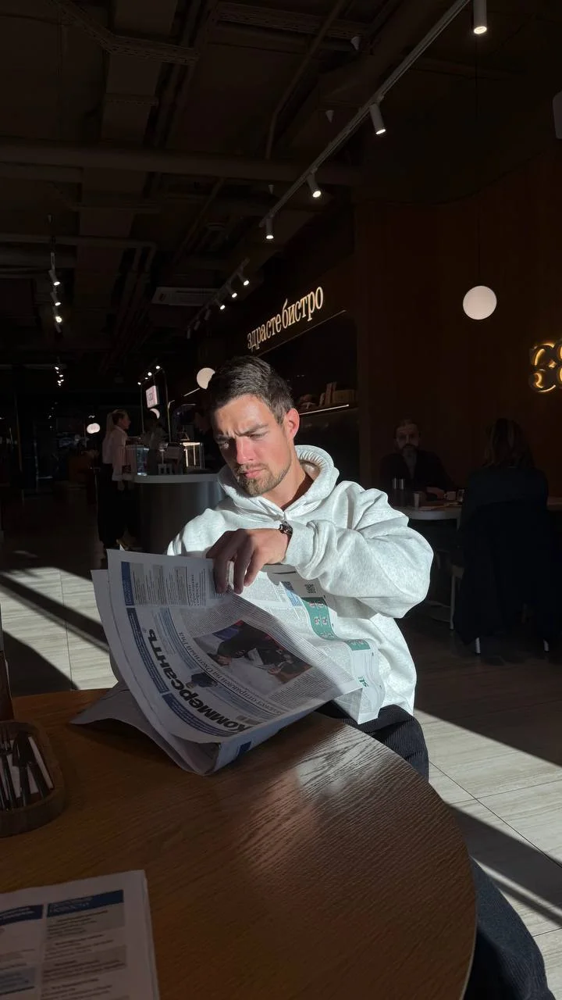
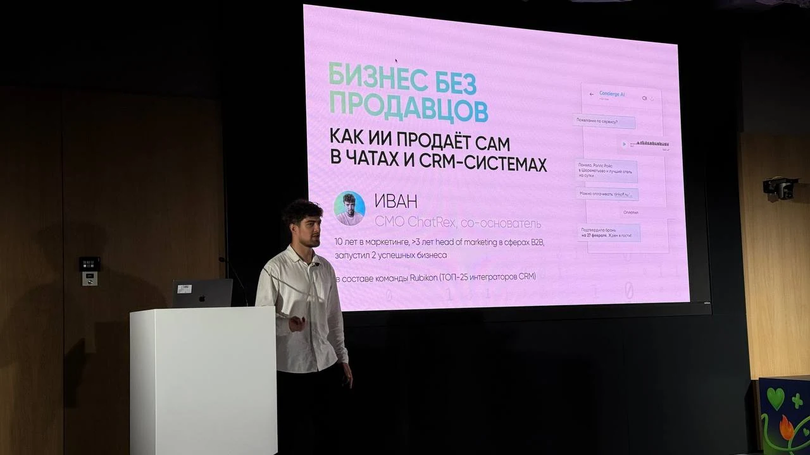
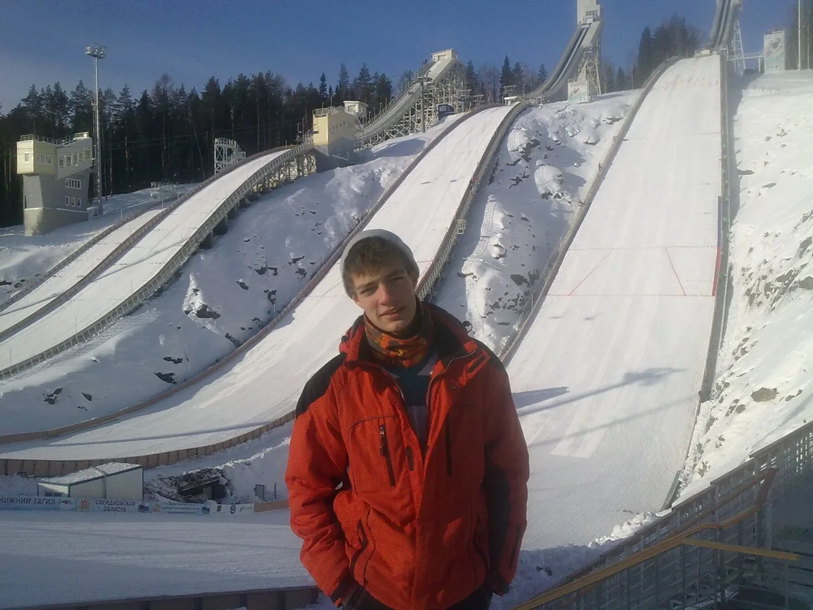
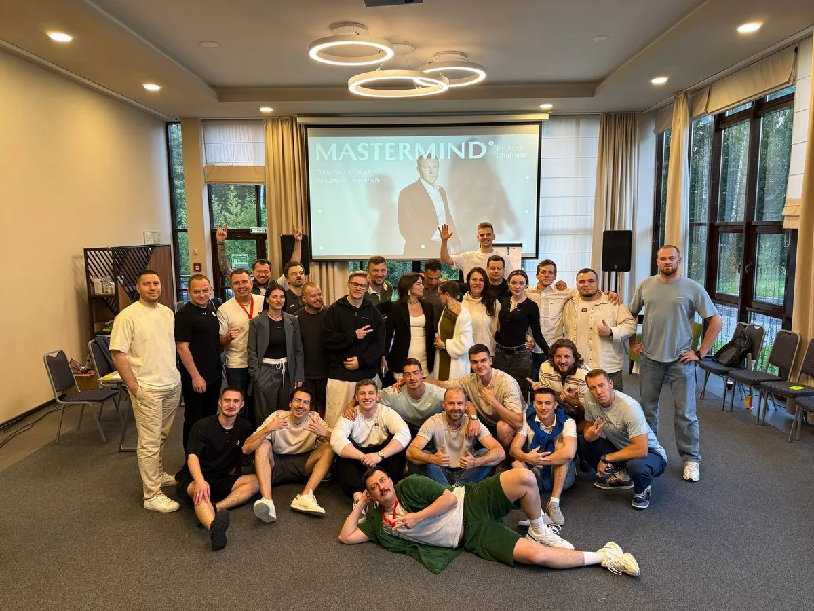

Предприниматель · AI-архитектор · автор Malakhov AI
Иван Малахов — человек в AI
Помогаю бизнесу находить деньги в процессах и собирать AI-решения, которые входят в реальную работу команды — от продаж и CRM до закупок, баз знаний и внутренних инструментов.
- 11+
- лет в маркетинге и продуктах
- 60+
- AI и software-решений для бизнеса
- 60 мин
- первичный аудит процесса

Иван Малахов · AI для бизнеса · 2026
Содержание
Выберите, что хотите узнать
01 · Путь
Как меня затянуло в искусственный интеллект
Первый раз масштаб ИИ я почувствовал в крипте. Мы делали скрипты для мультиаккаунтов, автоматизировали действия и подключали нейросеть к процессам, которые раньше приходилось выполнять руками. В какой-то момент стало очевидно: эта технология будет менять целые индустрии.
Это был конец 2024 года. Через несколько месяцев я уже плотно изучал модели, снимал первые видео, тестировал нейросети в собственных проектах и разбирался, где они дают эффект, где ломаются и где требуют контроля.
«Меня зацепила возможность брать кривой, медленный, ручной процесс и превращать его в систему».
Если менеджер тратит полдня на коммерческое предложение — это процесс. Если senior-сотрудника каждый день отвлекают одинаковыми вопросами — тоже процесс. Если в CRM тысячи контактов и почти нет продаж, процесс просто устроен плохо. ИИ становится сильным там, где уже есть повторяемость, данные, люди и деньги на кону.

Предпринимательский взгляд
Первый бизнес я открыл в 19 лет — студию дизайна, сайтов и интернет-рекламы. Потом были армия, переезд в Москву, отделы маркетинга, продукты, команды, продажи и проекты по всей России. Были удачные запуски, а были продукты с большой командой и инвестициями более 100 000 долларов, на которые рынок ответил минусом.
Поэтому я смотрю на ИИ не через эффектную демонстрацию. Меня интересует, сколько часов освободит команда, как изменится скорость ответа клиенту, какие заявки вернутся из старой базы и что произойдёт с выручкой или маржой. Рынок быстро отделяет красивую технологию от полезной.
Работа с продуктами научила меня держать в поле зрения и технологию, и экономику, и то, как решение войдёт в ежедневную работу людей. Без этого даже сильная идея остаётся презентацией.
02 · Метод
Сначала процесс. Затем архитектура и пилот
Многие компании заходят в ИИ с покупки подписки, бота или разовой автоматизации. Энергия появляется, но системный эффект часто остаётся слабым. Я начинаю с аудита и архитектурной карты внедрения.
- 01
Разобрать процесс
Где теряется время, кто отвечает, какие действия повторяются и где появляются ошибки.
- 02
Проверить данные
Что уже есть в CRM, 1С, таблицах, документах и базах знаний, насколько этому можно доверять.
- 03
Посчитать эффект
Какая метрика должна измениться: время цикла, конверсия, стоимость лида, качество или маржа.
- 04
Запустить пилот
Один ограниченный контур, точки контроля, ответственный человек и решение о масштабировании.
Поэтапная сборка AI-контура
Компания берёт один процесс, запускает пилот, измеряет результат и адаптирует команду. Затем — второй и третий процессы. За год так можно внедрить 6–12 качественных решений и получить преимущество, которое накапливается.
В процессе
Рабочая сессия команды
Продукт, интерфейс и архитектура AI-сервиса собираются в одном контуре.
03 · Практика
Где ИИ уже возвращает время и деньги
Ниже — типовые сценарии и ориентиры по проектам или плановым KPI пилотов. Это не универсальные обещания: реальный результат зависит от данных, команды, текущего процесса и качества внедрения.
КП за 10 минут
AI-система собирает черновик коммерческого предложения, подтягивает позиции, описания, цены и условия, чтобы менеджер быстрее вернулся к клиенту.
- x10–15 к скорости подготовки
- до +93% к скорости первого ответа
- ориентир: +13% выручки отдела за 2 месяца
42 000+ товаров под контролем
Поиск по каталогу обычным языком, подбор аналогов и сравнение характеристик для дистрибуции, опта и e-commerce.
- −40–65% времени на подбор
- +30–50% к скорости обработки
- −20–35% ошибок подбора
AI-поиск по базе знаний
Ответы на вопросы сотрудников с опорой на регламенты, инструкции, FAQ, презентации и записи встреч.
- −60–80% времени на поиск
- −30–50% нагрузки на senior
- +20–40% к скорости онбординга
Закупки и тендеры
Приведение предложений к единой структуре, сравнение поставщиков и разбор требований тендерной документации.
- −80–95% времени на сравнение
- −30–50% цикла выбора
- −40–70% времени на разбор тендера
Реактивация B2B-базы
Сегментация старых клиентов, потерянных сделок и тёплых контактов с персональными поводами для нового диалога.
- пилот: 500–3 000 контактов
- 5–15% ответов тёплых сегментов
- 1–5% диалогов или встреч
Внутренние AI-инструменты
Ассистенты для документов, контента и операций, которые связывают разрозненные данные и уменьшают ручную рутину.
- метрика задаётся до разработки
- контроль качества в критичных точках
- масштабирование только после пилота
04 · Проекты
Продукты, медиа и школа AI-внедрений
Chatrex
Первой большой AI-историей для меня стал Chatrex — платформа для AI-ботов и автоматизации коммуникаций в Telegram и WhatsApp. Рынок тогда только учился понимать, куда подключать нейросети, а модели ошибались заметно чаще. Приходилось одновременно строить продукт, продавать и объяснять, где технология уже полезна, а где процесс сначала нужно привести в порядок.
Chatrex дал практику, которую не получить на курсах: как бизнес покупает AI-решения, какие сценарии выдерживают реальную работу, как связать коммуникации с CRM и почему красивая демонстрация без архитектуры быстро ломается.
- 500+
- регистраций
- 50+
- продаж
- от 3 000 ₽
- подписка в месяц
- 100 000 ₽+
- внедрение под задачу

Malakhov AI
Публичный проект про ИИ для бизнеса: разборы, видео, статьи, продукты и наблюдения за рынком. Для меня это одновременно медиа и лаборатория.
- 60+
- AI и software-решений
- 11+
- лет в маркетинге и продуктах
Malakhov AI Digest
AI-медиа-пайплайн: источники, парсинг, редактура, публикация и дистрибуция. Полигон для агентов, API, изображений, SEO и контроля качества.
- 3 000+
- органических пользователей
- 4 месяца
- от запуска до результата
VibeMonster
AI-система управления рекламой: анализ URL, структура кампаний, генерация объявлений, контроль CPA, уведомления и лог действий алгоритма.
- −21%
- CPL в кейсе SoundSeed
- 15 минут
- на сборку кампании
SoundSeed
Музыкальная платформа, в развитии которой соединились продукт, маркетинг и масштабирование. Проект стал одним из самых сильных практических кейсов роста.
- 100 000+
- пользователей
- 3 месяца
- до первой большой отметки
05 · За пределами работы
Спорт, движение и предпринимательское окружение
Спорт со мной с первого класса. В юношестве я выступал за сборную Мурманской области по лыжному двоеборью — прыжкам с трамплина и лыжным гонкам. Первый марафон на 50 километров прошёл в 16 лет. Наверное, оттуда осталась тяга к скорости, нагрузке и сложным задачам.
Сейчас люблю волейбол, футбол, природу, поездки и экстремальные вещи вроде банджи и парашюта. Полтора года прожил на Бали, много путешествовал и сохранил привычку исследовать: залезть в незнакомый угол, понять, как всё устроено, и заметить возможности, которые другие пока не видят.
В людях меня заряжают сила, идея и движение. Поэтому ИИ мне так близок: в нём есть скорость, неизвестность, конкуренция, продукты, новые рынки и ощущение, что правила игры переписываются каждый день.


06 · Первый шаг
Бесплатный аудит бизнес-процесса
За 60 минут мы разбираем бизнес, находим процессы с потенциалом для ИИ, выбираем точку первого пилота и решаем, нужна ли дальше архитектурная карта внедрения.
Кому формат принесёт больше пользы
Компаниям, где уже есть команда, повторяющиеся операции и данные, на которые можно опереться.
- выручка от 100 млн ₽ в год, оптимально — от 200 млн ₽;
- команда от 10 человек и повторяющиеся процессы;
- CRM, 1С, клиентская база, база знаний или большой документооборот;
- отдел продаж, маркетинга, поддержки, закупок или операционный блок;
- B2B, торговля, дистрибуция, IT/SaaS, производство, интеграция или агентский бизнес.
FAQ
Коротко о главном
Кто я такой?
Я — Иван Малахов, предприниматель, AI-архитектор и автор Malakhov AI. Занимаюсь аудитом бизнес-процессов, архитектурой AI-внедрений, агентными системами, AI-ботами и продуктами на базе искусственного интеллекта.
Что такое аудит бизнес-процесса?
На аудите я за 60 минут разбираю процессы, данные, CRM, документы и повторяющиеся задачи. Мы находим точку, где ИИ может дать измеримый эффект, и определяем формат первого пилота.
С какими компаниями я работаю?
Мой основной фокус — компании с выручкой от 100 млн рублей в год, командой от 10 человек и накопленными данными. Особенно релевантны B2B, торговля, дистрибуция, производство, IT/SaaS, интеграторы и агентства.
Как со мной связаться?
Запросить аудит можно через форму на malakhovai.ru или написать мне напрямую в Telegram: @iddopamine.
Следующий шаг
Есть процесс, который съедает время и деньги?
За один созвон найдём наиболее сильную точку для ИИ и зафиксируем конкретный первый пилот — без продажи разработки любой ценой.
- 60 минут
- Без обязательств
- Конкретный следующий шаг
Мои материалы об ИИ и продуктах
Разборы, наблюдения и рабочие кейсы.
Обновлено 21 июня 2026 года. Новостной Telegram-канал: @malakhovaidigest.